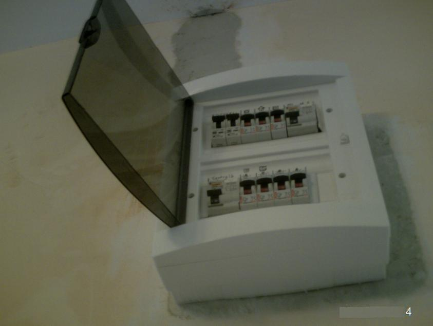

- energie luminoasă
- energie termică
- energie mecanică
- energie chimică
Circuite electrice din locuinţă
Tablouri de racordare
Părţi componente ale instalaţiei electrice care servesc la primirea şi distribuirea energiei electrice.- ablouri de branşament - pentru racordarea clădirii
- tablouri de firidă - ce alimentează şi asigură protecţia unui grup de apartamente
- tablouri de apartament - asigură distribuţia şi protecţia circuitelor din apartament.
Cofret - locul de legătură dintre linia de distribuție principală și consumator, el este un tablou electric prevăzut cu siguranțe.
Instalaţia electrică interioară
Ansamblu de circuite electrice pentru alimentarea corpurilor de iluminat și a receptoarelor electrocasnice, aparatelor de protecție și siguranță, aparate de comutare și accesorii de racord.
Elementele instalaţiei
Contorul electric
Aparat ce masoară energia electrică folosită în timpul utilizării de către consumator. Consumul se exprimă în KWh.
Tabloul de siguranţe
- locul de plecare a circuitelor de lumină şi priză
- protejează receptoarele din locuinţă de efectele curenţilor ce depăşesc limita admisă a intensităţii
- serveşte la scoaterea de sub tensiune a instalaţiei

Scurtcircuitul apare atunci când intensitatea curentului crește de până la șase ori intensitatea nominală.
- sigurante fuzibile
- sigurante automate


Circuitele electrice de lumină şi de prize
Au trasee verticale şi orizontale, amplasate la distanţe bine stabilite faţă de alte elemente din locuinţă. Pe aceste trasee găsim doze de derivaţie plasate pe linie orizontală şi doze de aparat. Circuitele electrice sunt formate din:- tuburi de protectie
- conducte electrice cu conductoare si accesorii
Dozele
Cutii pătrate sau rotunde, având orificii pentru introducerea capetelor de tuburi protectoare.- doze de derivaţie - plasate pe linie orizontală
- doze de aparat - plasate la 1, 5 m pentru întrerupător; 0,2-0,4 m pentru priza de camere; 1,2 m pentru priza din bucătărie.
Conducta electrică
Este un ansamblu format din cel puţin două conductoare cu izolaţie individuală şi manta izolatoare. În funcţie de utilitatea conductei este aleasă culoarea izolaţiei:- verde-galben pentru conducta de protecţie
- alb sau albastru deschis pentru conducta de nul
- maro sau negru pentru conducta de fază
Priza
Asigură alimentarea cu energie electrică a consumatorilor mobili.Este formată din:
- soclu din material izolant
- teci de contact din alamă prevăzute cu arcuri
- borne de racord al conductoarelor instalaţiei
- carcasa prevăzută cu orificii pentru introducerea fişei şi a pieselor de fixare
Fișa
Este un aparat de conectare care realizează legătura dintre prize şi consumatori. Este alcătuită din două ştifturi conductoare legate la firele conductorului, fixate pe un suport izolator şi acoperite cu un capac.Întrerupătoare
Închid şi deschid circuitul electric, se compun din:- borne de legătură tip şurub şi piuliţă
- două contacte fixe
- contact mobil
Comutatoare
Modifică succesiv, conexiunile unui sau mai multor circuite electrice.Lămpi
Prin intermediul lor energia electrică se transformă în energie luminoasă:- Lampa cu incandescenţă (becul) - funcţionarea becului are la bază fenomenul de incandescenţă (se manifestă prin emiterea de lumină atunci cand filamentul de wolfram se încălzeşte la temperaturi mari, aproximativ 2700ºC)
- Lampa cu halogen - emite lumină mai albă
- Lampa fluorescentă - este un tub care are depus pe pereţi un strat fin de substanţă fluorescentă, fluorescenţă care transformă radiaţiile utraviolete în lumină